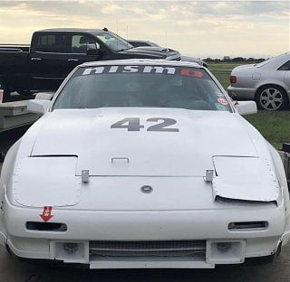
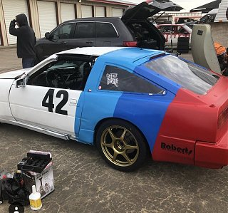
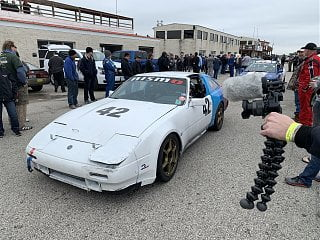
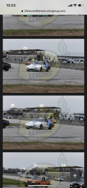

-
Hey guys, posted before regarding this car and am back looking for more advice.
Background: 87NA 2+2 with VG33 (2000 pathfinder), eBay headers, GAZ coilovers, nistune, Southbend endurance clutch/lightened flywheel. Fully caged, stripped, dedicated track car. Competes in endurance racing (WRL, Lemons). Otherwise stock. I have turbo hubs and a turbo 5speed thatâs next to go in. Will probably do z32 brakes although we havenât had any brake issues.
looking to stay NA. If you could build an NA VG33, what would be on your list to get the most out of it? We are looking to jump up a class and would like to be as competitive as possible. On my list is 1) headers (not sure which brand), cams (havenât researched too much but I hear isky are pretty good?), 3) better tune, 4) gutted plenum? Would this be pointless if staying NA? I obviously donât want to lose any power, especially in the upper half to third of the rpm band… 5) what else?    -
It really depends on what you're looking for. Do you know what modifications have already been done to the engine as it sits?1985 300ZX Z31 2+2 VG33ET (running!) -
Here are the main points in my opinion.
Your biggest problem is that stock z31 intake( I assume thats what your using ), Gutting wont help an NA. If your rules allow you to prop up the hood or run a bubble/scoop, you should install a pathfinder intake.
Your e bay headers are usable ( it they are the ones I'm thinking of), you just need to die grind out all the weld junk in the exhaust flange and chop off the collectors and weld on better ones.
Cams and adjustable gears would be good.
Compression increase would be good. If you could afford pistons do it, if not mill the heads. Depending on how high you plan to rev it you might want to buy after market rods, or at least DE rods.
I assume wet sump? A good road race baffled pan is crucial! Add a crank scraper if you can.
I can go on, but Ill let you chew on that for a while. -
I think solid motor mounts that are shorter than stock will allow for the pathy intake without raising the hood.
I've been looking at Schneider's regrounds for cams.
Ferrea valves may be good too. they make a 1mm oversize valves for minimal gains.--------------
Legal stuff:
**Nissan Employee**
Any information shared is simply my own opinion and NOT the opinion of Nissan
not legal stuff:
'88 300ZX 2+2-- driving… just details left
'22 Q60RS-- I tell the wife it's hers…
'87 Chaparral bowrider-- the next project
'00 Corolla-- kids car.
'14 E-350-- Gotta haul those kids in something. -
Sorry guys, been out of town and didnât have the alerts turned on and sort of forgot about it. Thanks for the responses!
Not sure which eBay headers they are, was just told they were eBay headers when I bought it. We already have the hood raised about an inch on the hinges, so pathfinder clearance shouldnât be an issue. What year pathfinder should I start looking for? When itâs time for an engine rebuild, we will definitely be doing pistons, rods, lifters. Definitely wet sump. Pan isnât baffled yet, but when we do the mounts I planned on putting in the baffled larger pan that pucker factory makes. Was also looking at their headers but havenât really seen any data on them.
Would love to do poly motor mounts but havenât been able to find any. Little hesitant to go with solid as its so hard on everything else mechanically, especially with the trans, diff, and rear subframe mounts being rubber.
-
I think all the pathfinder intakes ( vg33) are all pretty similar ( don't quote me), but go with something in the 1997 range? Look at them and pick the longest and smoothest runners.
I used speedway motor mounts on my ratson rod project, I wouldn't hesitate using them in a race app, if needed. See here https://youtu.be/p1PJvdoL6H4
IMO Solid engine mounts and rubber trans mts is the way to go, This gives you direct torque transfer but if you have chassis flex the rubber trans mt will flex, keeping you from breaking stuff.
I would run solid, or at least stiff polly sub frame mounts.Last edited by GT2; 02-06-2019, 10:43 AM.

Copyright © 2006–. All rights reserved. Privacy Policy